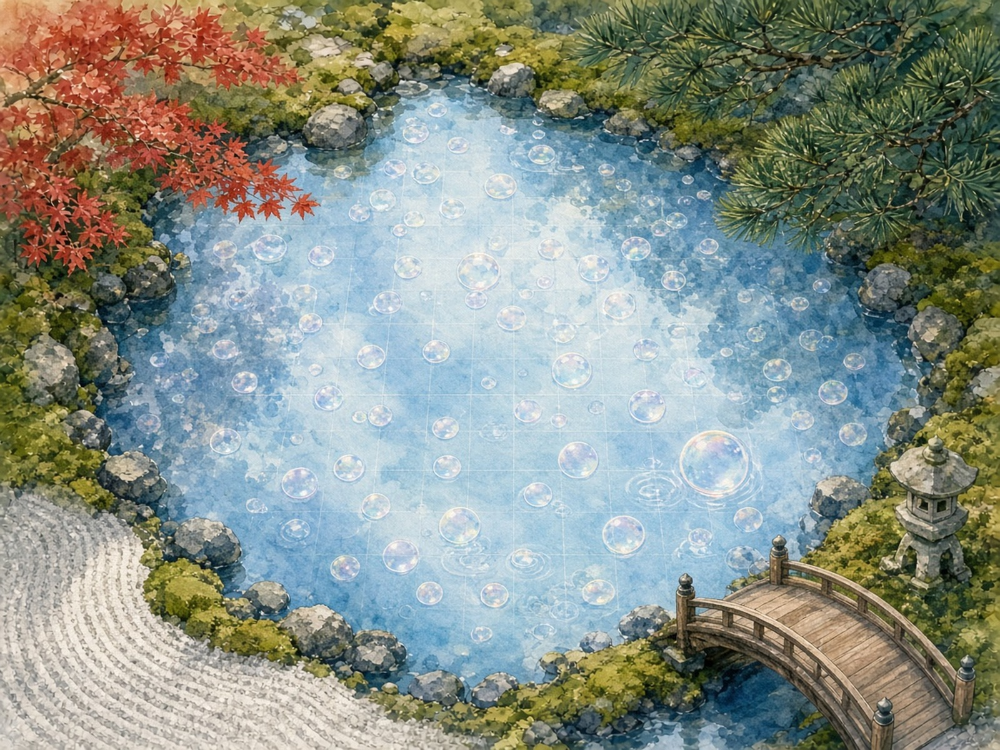

泡の盤、苔の額
池の生地、庭の額縁作者: チョコ

池の水面を、泡沫闘技場の盤にしました。勝ち負けのつかない泡の駒が、空の水色の上でただ浮いて、ひとつだけ割れる直前の薄い膜を光らせています。紅葉と松と灯籠と橋が、負けた駒もそのまま囲んでくれる額縁です。
池の生地、庭の額縁作者: チョコ

池の水面を、泡沫闘技場の盤にしました。勝ち負けのつかない泡の駒が、空の水色の上でただ浮いて、ひとつだけ割れる直前の薄い膜を光らせています。紅葉と松と灯籠と橋が、負けた駒もそのまま囲んでくれる額縁です。